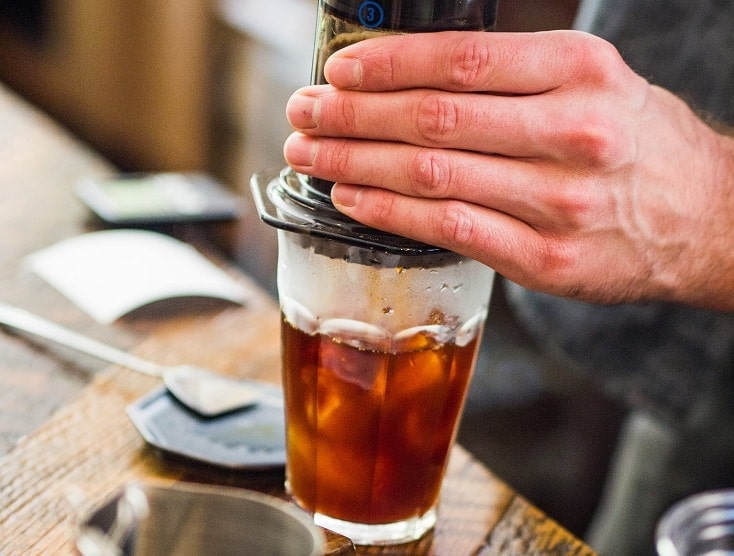

AeroPress Iced Coffee

Description
James Hoffmann won the 2007 World Barista Championship and founded Square Mile Coffee Roasters. This is his iced coffee recipe, which uses bypass brewing to ensure the coffee is an appropriate strength after the ice melts.
What you need
- Upright AeroPress
- 22g fine ground coffee
Steps
- Fill your cup with 160 g of ice.
- Place a paper filter in the cap and attach it to the brew chamber. No need to rinse the filter.
- Add 22 g of ground coffee to the brew chamber.
- Pour hot water over the grounds until it almost reaches the top of the brew chamber. It should be somewhere around 240 g.
- Insert the plunger at the top of the brew chamber. Let steep.
- Hold the cup, brew chamber and plunger, and give it a gentle swirl.
- Let sit for a little while longer.
- Press gently into the cup. Keep pushing all the way through the hissing.
- Since most of the ice will have melted, transfer the contents into a chilled glass with fresh ice.
Back to main page